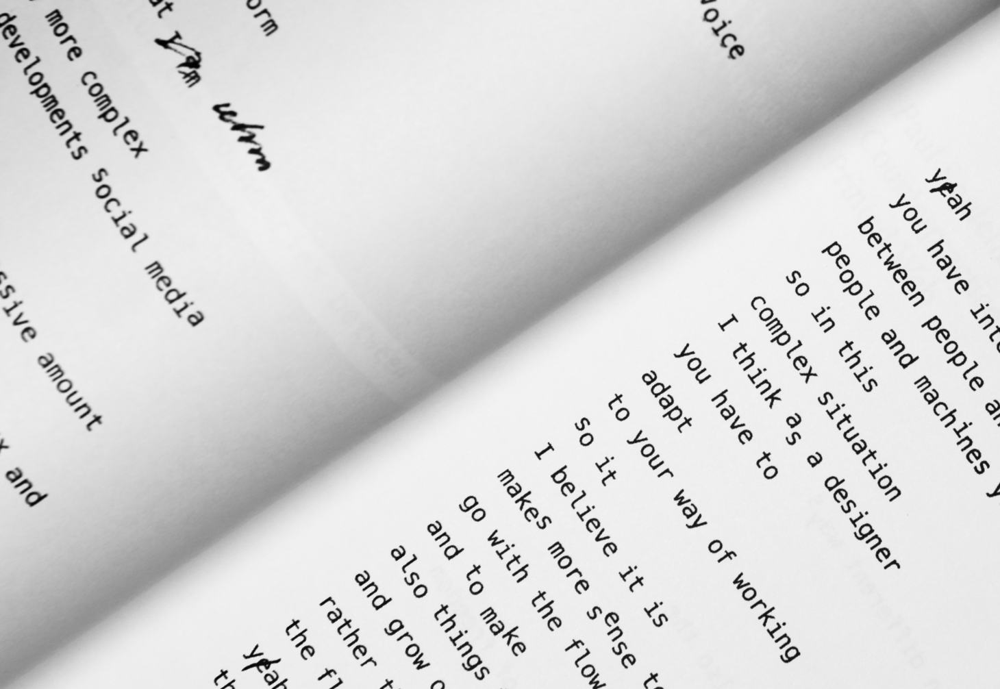
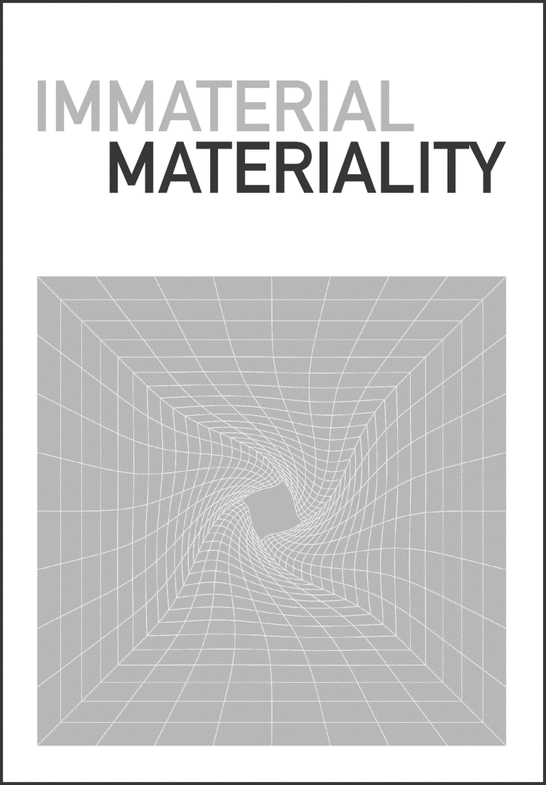
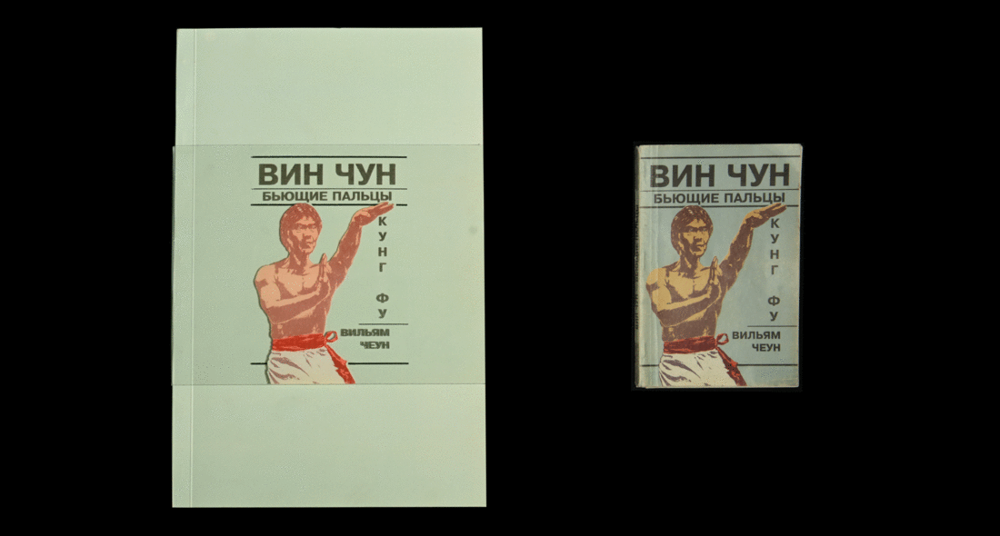
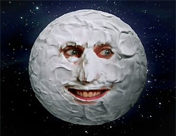
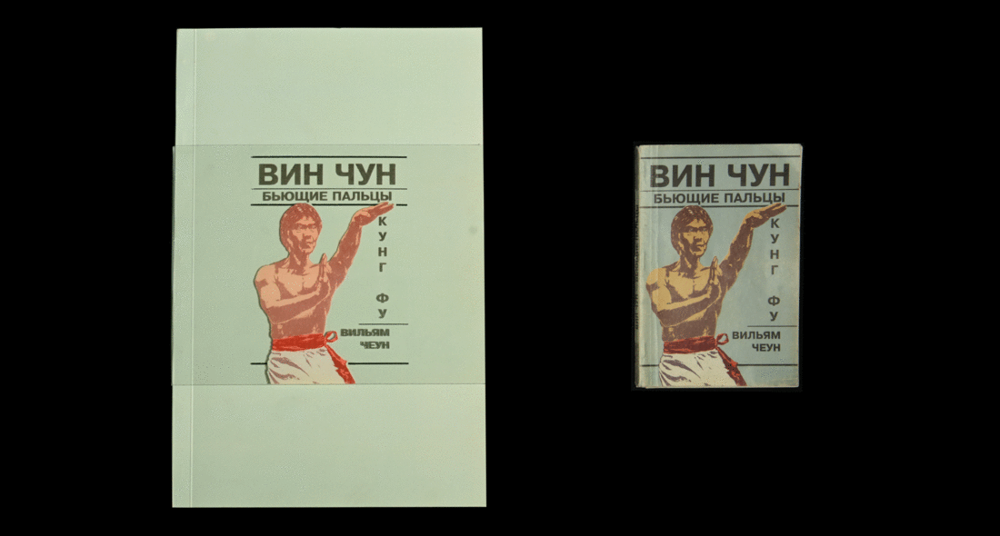
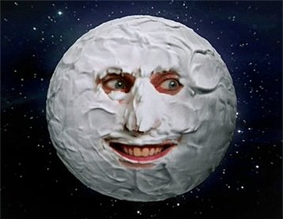
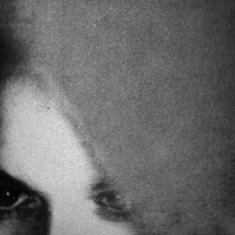
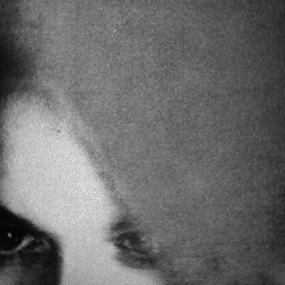

A monospaced version of an existing typeface by Swiss type foundry.
A transcription  of the lecture excerpt by Luna Maurer from Moniker, designed in a way to reflect the content & the speech itself.
The curatorial essay  exploring the establishment of the Einstein's Spacetime concept in avant-garde art.
A small project  about choosing suitable content to work well with an already existing layout.
A book  designed as a visual response to another book, found in the secondhand bookshop.
I have noticed a massive amount of printing problems with this found old book. Odd images, strange typographic decisions and mistakes, poor quality of paper through which you can see several overlapped pages. But then all these indignations turned out to become the inspiration for the ideas on how to interpret this book. As a result, each page in my book is constructed imitating that disturbing transparency of the original. To add more visual connection from the very beginning I also did an additional plastic cover. When it is on the book, it almost duplicates the cover of the original. And taking it off visualize what has been excluded from the original book.
An astrological bot  generating odd daily forecasts. So generalized, yet so personal.
A lyrics animation
about choosing suitable content to work well with an already existing layout.
A book  designed as a visual response to another book, found in the secondhand bookshop.
I have noticed a massive amount of printing problems with this found old book. Odd images, strange typographic decisions and mistakes, poor quality of paper through which you can see several overlapped pages. But then all these indignations turned out to become the inspiration for the ideas on how to interpret this book. As a result, each page in my book is constructed imitating that disturbing transparency of the original. To add more visual connection from the very beginning I also did an additional plastic cover. When it is on the book, it almost duplicates the cover of the original. And taking it off visualize what has been excluded from the original book.
An astrological bot  generating odd daily forecasts. So generalized, yet so personal.
A lyrics animation  music video.
An essay
music video.
An essay  questioning one of the most famous 'rules' of many visual communication areas throughout the decades.
A digital publication
questioning one of the most famous 'rules' of many visual communication areas throughout the decades.
A digital publication  for the Fine Arts degree show at BHSAD, that was planned to take place this summer of 2020 but was indefinitely postponed due to the present situation with the coronavirus.
Some information about who I am  and how to contact me.
for the Fine Arts degree show at BHSAD, that was planned to take place this summer of 2020 but was indefinitely postponed due to the present situation with the coronavirus.
Some information about who I am  and how to contact me.